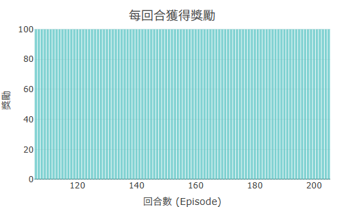
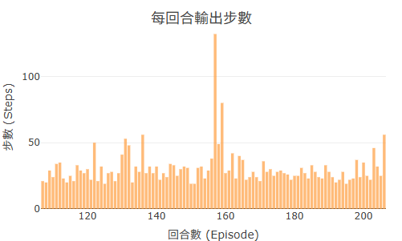

強化學習的訓練過程發生在數百、數千個回合裡，單看遊戲畫面只能看到「現在這一刻」——Agent 往左走還是往右走，但你無法判斷它是在進步還是停滯。
訓練圖表的存在，是為了把時間維度攤開來看。Reward 曲線告訴你 Agent 每一段時間的「表現分數」，Steps 曲線告訴你它完成任務的「效率」。兩者合起來，就像心電圖一樣，讓「學習」這件原本看不見的事情變得可以觀察、可以診斷。
RR 平台提供兩種不同時間解析度的圖表，各自回答不同問題：
| 圖表類型 | 時間單位 | 滑動視窗 | 適合觀察 |
|---|---|---|---|
| 每秒圖（second chart） | 實際秒數 | 最近 60 秒 | 即時訓練速度、短期波動 |
| 每回合圖（episode chart） | 回合數 | 最近 100 回合 | 學習趨勢、是否真正在進步 |
滑動視窗的意義：圖表不是顯示所有歷史，而是只顯示「最近一段時間」的平均值。這樣做的好處是：單一回合的隨機雜訊不會干擾大趨勢，讓你看到的是平滑後的學習走向。
Reward 曲線是最重要的訓練指標。它顯示 Agent 在最近 N 回合（或 N 秒）內，平均每回合拿到多少分。
| 曲線形狀 | 意思 | 建議動作 |
|---|---|---|
| 穩定上升 | Agent 持續學到新東西，學習有效 | 繼續訓練，觀察何時趨於平穩 |
| 長時間平坦 | 學習停滯，Agent 卡在某個策略 | 嘗試調高 ε 增加探索，或調整 α |
| 劇烈震盪 | ε 太高（太多隨機）或 α 太大（更新太激進） | 降低 ε 或 α，讓學習更穩定 |
| 先升後明顯下降 | 可能過訓練，或遊戲參數設定問題 | 試著降低 α，或重置 Q-Table 從頭來 |

Maze2D 200 回合後的 Reward 曲線：初期震盪，逐漸穩定收斂
Steps 曲線顯示 Agent 平均每回合走了多少步，或每秒走了多少步。「步數」的「好」方向依遊戲設計而定，解讀前要先了解這個遊戲的目標。
| 曲線趨勢 | 可能意思 |
|---|---|
| 步數下降 | Agent 找到更短路徑，效率提升（迷宮類遊戲的好跡象） |
| 步數上升 | Agent 在遊戲中活得更久（CartPole 的好跡象）；或 Agent 迷路了（迷宮類的壞跡象） |
| 步數極端穩定 | Agent 可能收斂到一個固定策略（好或壞，要搭配 Reward 判斷） |

Steps 曲線：Agent 完成每回合所需步數隨訓練逐漸減少
訊號根本沒進來。可能是遊戲沒有正確載入、通訊協定出錯，或 Reward 設計讓 Agent 永遠拿不到正分。檢查遊戲是否成功載入，或重新按「載入」按鈕。
ε 太低，Agent 過早停止探索，陷入局部最佳解。它找到了「某個還能活的策略」就不再嘗試更好的方法。試著提高 ε（例如從 0.05 調到 0.2）並重新訓練。
最常見原因是 α（學習率）太大，每次更新都把 Q 值衝過頭，導致學了又忘。建議把 α 降到 0.1 以下，讓每次更新比較保守。
Agent 學到一半開始「過訓練」，也就是過度依賴某個特定模式而喪失泛化能力。嘗試降低 α，或適當提高 γ（折扣率），讓 Agent 更重視長期報酬，避免局部短視。
建議步驟：